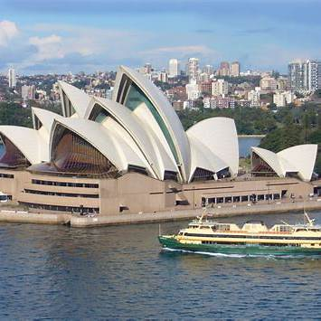
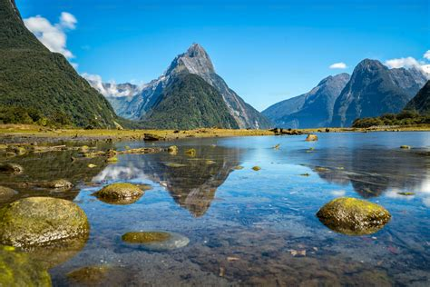
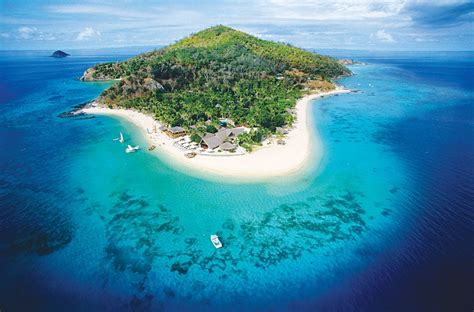
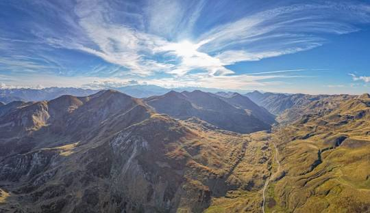
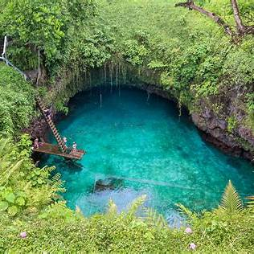
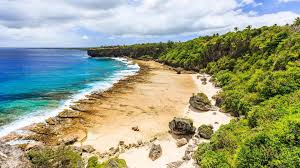
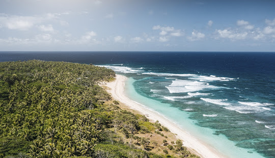
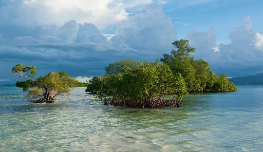
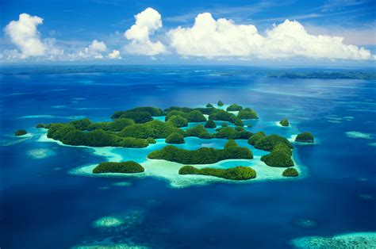
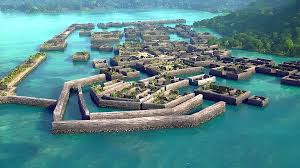

Australia / Oceania Explorer
Browse all featured countries in Australia / Oceania and open destination pages with real attractions.

New Zealand
Explore top attractions, itineraries, and travel insights for New Zealand.
Open Destination

Papua New Guinea
Explore top attractions, itineraries, and travel insights for Papua New Guinea.
Open Destination



Solomon Islands
Explore top attractions, itineraries, and travel insights for Solomon Islands.
Open Destination
